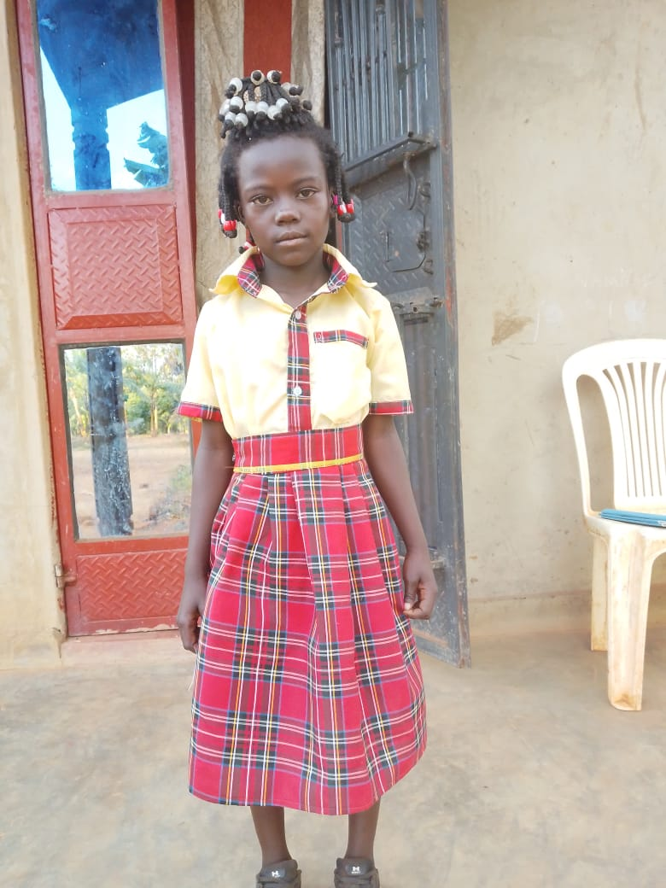
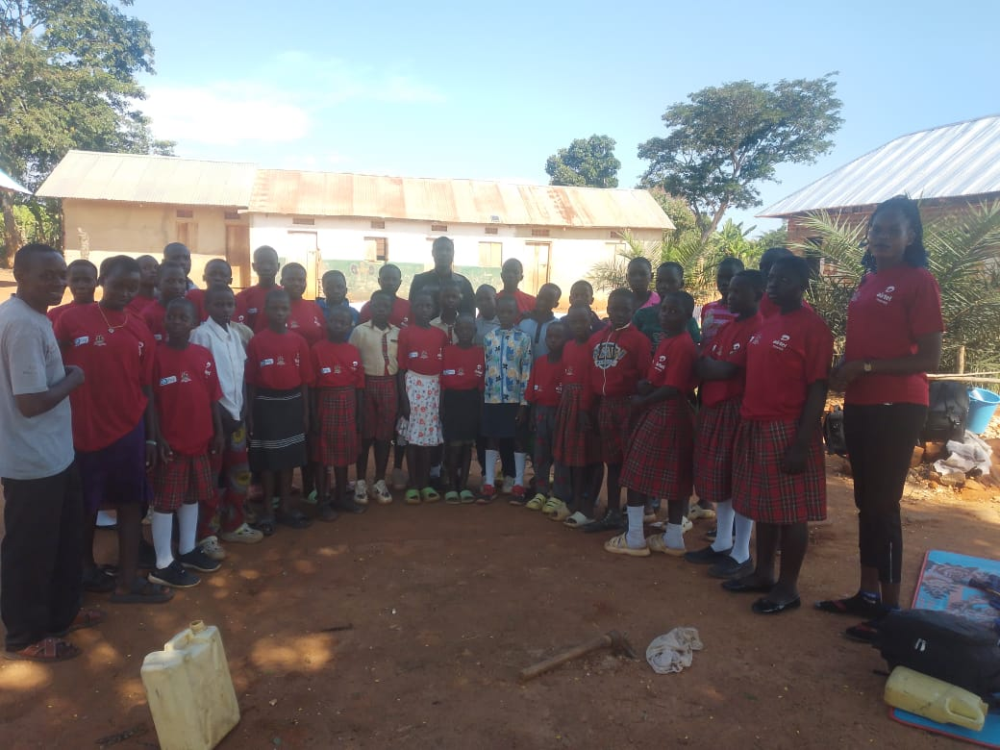
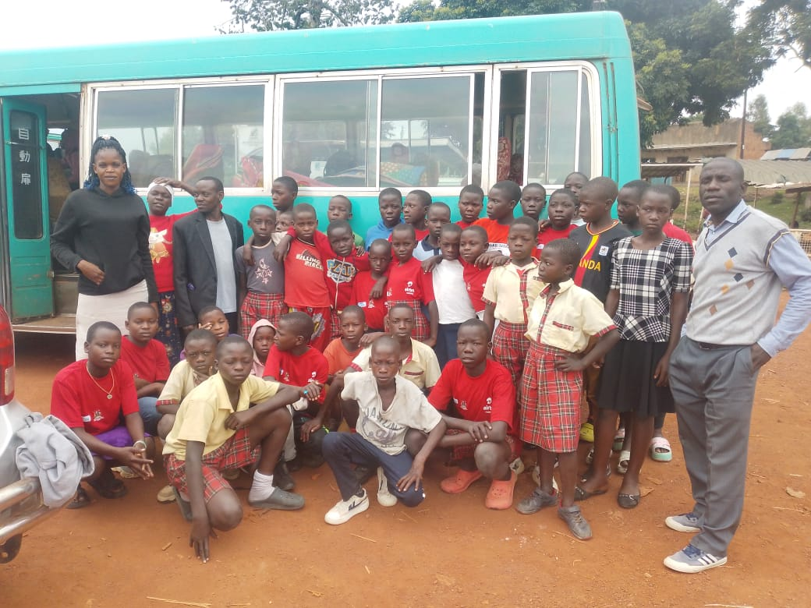
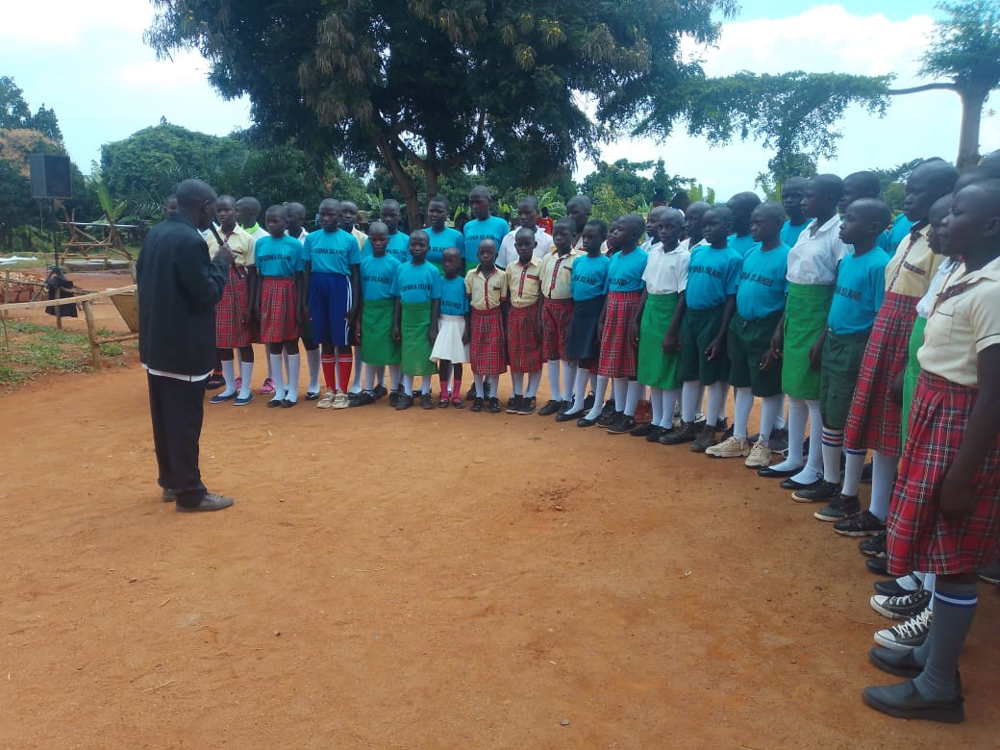

Community moments
The people and places behind the work.
A visual record supplied by Goodwill, showing learners, school life and community participation in Buvuma.








Watch
Community life in motion.
Short videos supplied by Goodwill offer another view of school and community activities in Buvuma.
Help the next chapter take shape.
Goodwill is building partnerships around education, skills, school health and community resilience.
Sponsor Goodwill